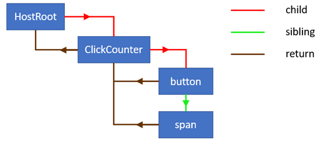
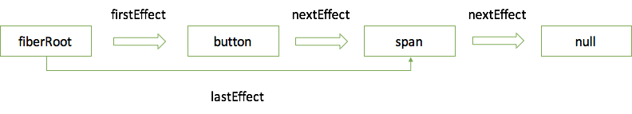

渲染机制主要分为两部分: 首次渲染和更新渲染。
首先通过一个小例子，来讲解首次渲染过程。
<!DOCTYPE html>
<html lang="en">
<head>
<meta charset="utf-8">
<title>React App</title>
</head>
<body>
<div id="root"></div>
</body>
</html>import React from 'react';
import ReactDOM from 'react-dom';
class ClickCounter extends React.Component {
constructor(props) {
super(props);
this.state = { count: 0 };
}
handleClick = () => {
this.setState((state) => {
return {count: state.count + 1};
});
}
render() {
return [
<button key="1" onClick={this.handleClick}>Update counter</button>,
<span key="2">{this.state.count}</span>,
]
}
}
ReactDOM.hydrate(<ClickCounter />, document.getElementById('root'));程序运行到ReactDOM.hydrate时，其中的<ClickCounter />已被babel转换为React.createElement(ClickCounter, null)，生成的element如下:
{
$$typeof: Symbol(react.element),
key: null,
props: {},
ref: null,
type: ClickCounter
}接下来执行hydrate函数，生成root节点。首先了解下fiber的部分数据结构。
workInProgress或fiber）fiber，组件实例或者DOM节点）HTML tag，如div，span等）state）props）VDOM）fiber）fiber）fiber）effect fiber）effect fiber）首次渲染会以同步渲染的方式进行渲染，首先创建一个update，将element装载到其payload属性中，然后合并到root.current.updateQueue，如果没有updateQueue会创建一个。我们暂且将root.current看成HostRoot。
接着根据HostRoot克隆一棵workInProgress更新树。将HostRoot.alternate指向workInProgress，workInProgress.alternate指向HostRoot。然后进入workLoop进行更新树操作部分。workLoop的任务也很简单，就是将所有节点的更新挂载到更新树上。下面详细看看reconciliation阶段。
reconciliation的核心在于workLoop。workLoop会以workInProgress为起点，即克隆的HostRoot，不断向下寻找。如果workInProgress.child不为空，会进行diff；如果为空会创建workInProgress.child`。
// 第一次循环nextUnitOfWork为workInProgress
function workLoop(isYieldy) {
if (!isYieldy) {
// Flush work without yielding
while (nextUnitOfWork !== null) {
nextUnitOfWork = performUnitOfWork(nextUnitOfWork);
}
} else {
// Flush asynchronous work until there's a higher priority event
while (nextUnitOfWork !== null && !shouldYieldToRenderer()) {
nextUnitOfWork = performUnitOfWork(nextUnitOfWork);
}
}
}因为只涉及首次渲染，所以这里将performUnitOfWork简单化。beginWork根据workInProgress.tag选择不同的处理方式。先暂且看看如何处理HostRoot。进入updateHostRoot方法，先进行workInProgress.updateQueue的更新，计算新的state，将update.baseState和workInProgress.memoizedState指向新的state。这里新的state装载的是element。
接下来调用createFiberFromElement创建fiber，将workInProgress.child指向该fiber，fiber.return指向workInProgress。
function performUnitOfWork(workInProgress) {
let next = beginWork(workInProgress); // 创建workInProgress.child并返回
if (next === null) { // 没有孩子，收集effect list，返回兄弟或者父fiber
next = completeUnitOfWork(workInProgress);
}
return next;
}
function beginWork(workInProgress) {
switch(workInProgress.tag) {
case HostRoot:
return updateHostRoot(current, workInProgress, renderExpirationTime);
case ClassComponent:
...
}
}用一张图体现更新树创建完成后的样子:

当workInProgress没有孩子时，即创建的孩子为空。说明已经到达底部，开始收集effect。
function completeUnitOfWork(workInProgress) {
while (true) {
let returnFiber = workInProgress.return;
let siblingFiber = workInProgress.sibling;
nextUnitOfWork = completeWork(workInProgress);
...// 省略收集effect list过程
if (siblingFiber !== null) {
// If there is a sibling, return it
// to perform work for this sibling
return siblingFiber;
} else if (returnFiber !== null) {
// If there's no more work in this returnFiber,
// continue the loop to complete the parent.
workInProgress = returnFiber;
continue;
} else {
// We've reached the root.
return null;
}
}
}
function completeWork(workInProgress) {
//根据workInProgress.tag创建、更新或删除dom
switch(workInProgress.tag) {
case HostComponent:
...
}
return null;
}协调算法过程结束后，workInProgress更新树更新完毕，收集的effect list如下:

effect list(链表)是reconciliation阶段的结果，决定了哪些节点需要插入、更新和删除，以及哪些组件需要调用生命周期函数。firstEffect记录第一个更新操作，firstEffect.nextEffect（fiber）记录下一个，然后继续通过其nextEffect不断往下寻找直至为null。下面是commit阶段的主要流程:
// finishedWork为更新树
function commitRoot(root, finishedWork) {
commitBeforeMutationLifecycles();
commitAllHostEffects();
root.current = finishedWork;
commitAllLifeCycles();
}变量nextEffect每次执行完上面一个函数会被重置为finishedWork。
commitBeforeMutationLifecycles检查effect list中每个fiber是否有Snapshot effect，如果有则执行getSnapshotBeforeUpdate。
// 触发getSnapshotBeforeUpdate
function commitBeforeMutationLifecycles() {
while (nextEffect !== null) {
const effectTag = nextEffect.effectTag;
if (effectTag & Snapshot) {
const current = nextEffect.alternate;
commitBeforeMutationLifeCycles(current, nextEffect);
}
nextEffect = nextEffect.nextEffect;
}
}commitAllHostEffects提交所有effect，实现dom的替换、更新和删除。
function commitAllHostEffects() {
while(nextEffect !== null) {
var effectTag = nextEffect.effectTag;
var primaryEffectTag = effectTag & (Placement | Update | Deletion);
switch (primaryEffectTag) {
case Placement: {
commitPlacement(nextEffect);
...
}
case PlacementAndUpdate: {
commitPlacement(nextEffect);
var _current = nextEffect.alternate;
commitWork(_current, nextEffect);
...
}
case Update: {
var _current2 = nextEffect.alternate;
commitWork(_current2, nextEffect);
...
}
case Deletion: {// 触发componentWillUnmout
commitDeletion(nextEffect);
...
}
}
nextEffect = nextEffect.nextEffect;
}
}commitAllLifeCycles触发componentDidMount或componentDidUpdate
function commitAllLifeCycles(finishedRoot, committedExpirationTime) {
while (nextEffect !== null) {
var effectTag = nextEffect.effectTag;
if (effectTag & (Update | Callback)) {
var current$$1 = nextEffect.alternate;
commitLifeCycles(finishedRoot, current$$1, nextEffect, committedExpirationTime);
}
if (effectTag & Ref) {
commitAttachRef(nextEffect);
}
if (effectTag & Passive) {
rootWithPendingPassiveEffects = finishedRoot;
}
nextEffect = nextEffect.nextEffect;
}
}这里并未逐一细说，不想读起来直犯困，更多讲述了大概流程。如果觉得有疑惑的地方，也知道该在什么地方找到对应的源码，解答疑惑。
更好的阅读体验在我的github，欢迎👏提issue。